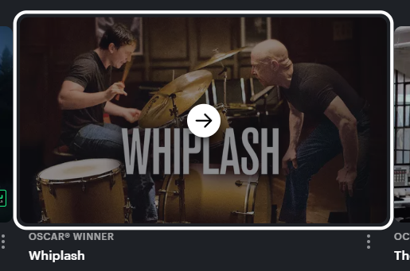
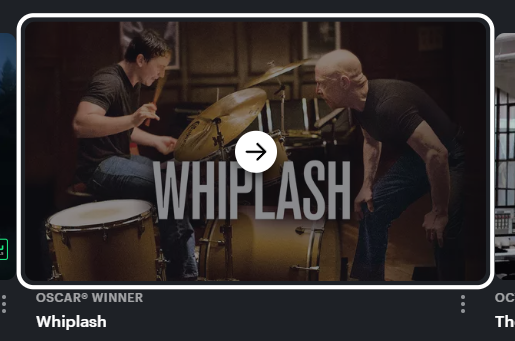
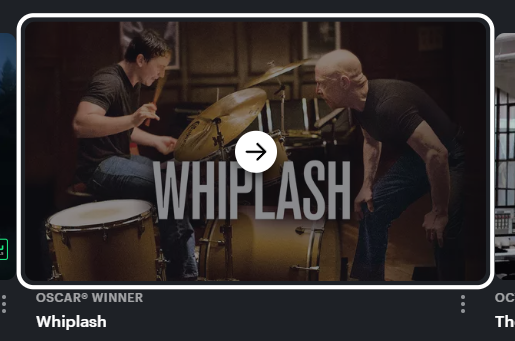

TRIGGERS - This microinteraction is triggered by the user hovering the mouse overtop any video or movie.
RULES - When the user hovers over a specific show or movie, then that show or movie is darkened, and will have a white border around it, indicating it can be clicked. The user can also move off of that show or movie to select a different one that will feature the same effects.
FEEDBACK - When the user hovers over a specific show or movie, then that show or movie is darkened, and will have a white border around it, indicating it can be clicked. The user can also move off of that show or movie to select a different one that will feature the same effects.
LOOPS AND MODES - There is no repetitive loop aspect to this microinteraction, however the thumbnail will remain darkened and the arrow icon will remain on screen until the user hovers off of that movie or show.
